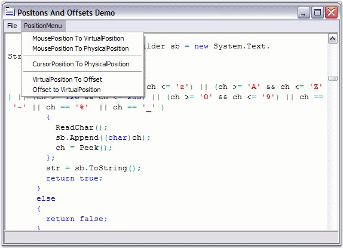

Edit Control has a wide array of APIs for handling text operations by using Positions and Offsets. The PhysicalLineCount property is an useful API that returns the actual number of lines in the Edit Control. The following APIs can be used to set the position of the cursor using the keyboard.
|
Edit Control Property |
Description |
|
CurrentColumn |
Gets / sets the current column. |
|
CurrentLine |
Gets / sets the current line. |
|
CurrentLineInstance |
Gets instance of the current line. |
|
CurrentLineText |
Gets text of the current line. |
|
CurrentPosition |
Gets / sets current position of the cursor in virtual coordinates. |
|
PhysicalLineCount |
Gets the count of the lines in the file. |
You can use the GoTo method to navigate to any desired position in a file.
|
Edit Control Method |
Description |
|
GoTo |
Navigates to the specified position in the opened file. |
|
[C#]
// Gets or sets the current column of the cursor. this.editControl1.CurrentColumn = 10;
// Gets or sets the current line of the cursor. this.editControl1.CurrentLine = 7;
// Gets or sets current cursor position. this.editControl1.CurrentPosition = new Point(10, 2);
this.editControl1.GoTo(7); |
|
[VB.NET]
' Gets or sets the current column of the cursor. Me.editControl1.CurrentColumn = 10
' Gets or sets the current line of the cursor. Me.editControl1.CurrentLine = 7
' Gets or sets current cursor position. Me.editControl1.CurrentPosition = New Point (10, 2)
Me.editControl1.GoTo(7) |
The coordinates associated with the above properties are referred to as Virtual (or Visible), because their values vary depending on factors that affect the state of the collapsible blocks, font size of the text, and so on.
 Note: The Virtual coordinates of the top-left
corner in the Edit Control is (1,1), and it is not a zero-based coordinates
system.
Note: The Virtual coordinates of the top-left
corner in the Edit Control is (1,1), and it is not a zero-based coordinates
system.
The following APIs are used for inter-conversion between virtual / actual positions and offsets.
|
Edit Control Method |
Description |
|
PointToVirtualPosition |
Converts point in client coordinates to the virtual position in text. |
|
PointToPhysicalPosition |
Converts point in client coordinates to the physical position in text. |
|
ConvertVirtualPositionToPhysical |
Converts virtual coordinates to physical coordinates. |
|
ConvertVirtualPositionToOffset |
Converts virtual position in text to the offset in stream. |
|
ConvertOffsetToVirtualPosition |
Converts in-stream offset to virtual coordinates. |
|
ConvertVirtualPointToCoordinatePoint |
Converts point in virtual coordinates to coordinate point. |
|
[C#]
// Convert coordinates associated with mouse position to virtual coordinates. Point virtualPosition = this.editControl1.PointToVirtualPosition(Control.MousePosition);
// Converts coordinates associated with mouse position to physical coordinates. Point physicalPosition = this.editControl1.PointToPhysicalPosition(Control.MousePosition);
// Converts virtual coordinates to physical coordinates. Point physicalPosition = this.editControl1.ConvertVirtualPositionToPhysical(virtualPosition);
// Converts virtual coordinates to offset value. long offset = this.editControl1.ConvertVirtualPositionToOffset(virtualPosition);
// Converts the offset value to virtual coordinates. Point virtualPosition = this.editControl1.ConvertOffsetToVirtualPosition(offset);
// Converts point in virtual coordinates to coordinate point. this.editControl1.ConvertVirtualPointToCoordinatePoint(int Column, int line); |
|
[VB.NET]
' Convert coordinates associated with mouse position to virtual coordinates. Dim virtualPosition As Point = Me.editControl1.PointToVirtualPosition(Control.MousePosition)
' Converts coordinates associated with mouse position to physical coordinates. Dim physicalPosition As Point = Me.editControl1.PointToPhysicalPosition(Control.MousePosition)
' Converts virtual coordinates to physical coordinates. Dim physicalPosition As Point = Me.editControl1.ConvertVirtualPositionToPhysical(virtualPosition)
' Converts virtual coordinates to offset value. Dim offset As Long = Me.editControl1.ConvertVirtualPositionToOffset(virtualPosition)
' Converts the offset value to virtual coordinates. Dim virtualPosition As Point = Me.editControl1.ConvertOffsetToVirtualPosition(offset)
' Converts point in virtual coordinates to coordinate point. Me.editControl1.ConvertVirtualPointToCoordinatePoint(Integer Column, Integer line) |

Figure 15: Positions and Offsets Conversion Options in Edit Control
Note: The Offset
value is always calculated from the top-left corner of the Edit Control from the
Virtual coordinates (1,1).
A sample which demonstrates the above features is available in the following sample installation path.
..\My Documents\Syncfusion\EssentialStudio\Version Number\Windows\Edit.Windows\Samples\2.0\Text Navigation\PositionsAndOffsetsDemo
See Also
Line Numbers and Current Line Highlighting